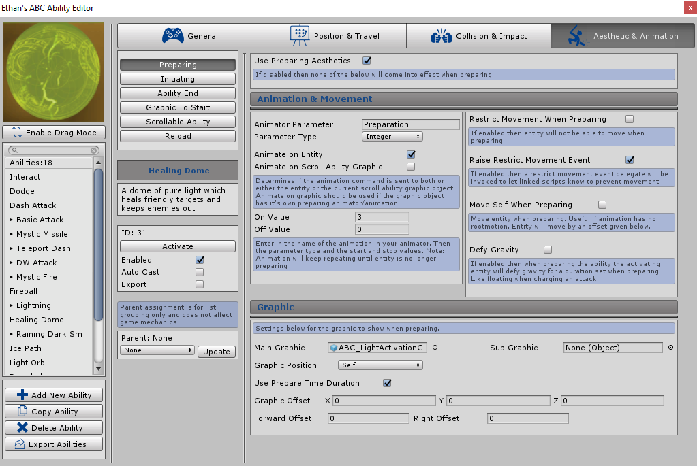

Preparing
Use Preparing Aesthetics
If ticked then graphics and animations can be setup to activate whilst the ability is preparing (after being activated). The abilities prepare time can be determined in the General tab under Settings. More details can be found by clicking the following link: Ability Prepare Time. once the prepare time is over the ability will initiate. An example of use is adding animation and graphics which make the entity look like they are conjuring a spell. Once enabled further settings will appear to setup the animations and graphics etc.

Animation Clip
Configuration can be setup to play an animation whilst the ability is preparing, the animation will repeat until the ability preparation stage is over.
Animation Clips defined will play on ABC's own Animation Runner system which means you can set to run animations without using Unity's Animator. To determine which animation to play simply select or drag and drop an Animation Clip into the setting. With all animations in ABC you have the option of using one or both of the animation systems (Unity Animator/ABC Animation Runner). It is recommended however that only one is used. Once an Animation Clip is selected the following settings will appear:
-
Animate on Entity
-
If ticked then the animation clip will run on the entity that the ABC component is on.
-
Animate on Scroll Ability Graphic
-
If ticked then the animation clip will run on the current scroll abilities graphic (if it exists).
This setting should be ticked if the current scroll ability graphic object has its own preparing animation you want to play.
-
Animate on Weapon
-
If ticked then the animation clip will run on the current weapon graphics (if it exists).
This setting should be ticked if the current weapon has its own animation you want to play.
-
Delay
-
Defines the delay before the animation clip is run
-
Speed
-
The speed of the animation clip. 1 is normal speed. A higher value will speed up the animation clip. A lower number will slow the animation clip down.
Animator Parameter
Configuration can be setup to play an animation whilst the ability is preparing, the animation will repeat until the ability preparation stage is over. The animation system links directly into the Unity animation controller attached to the entity and is required for the animations to activate. To determine which animation to play the “Animation Parameter” which has been setup in Unity needs to be written in the parameter config box, then the matching parameter type needs to be selected from the drop down, depending on the parameter selected the following settings will appear with default values:
-
Trigger Parameter
-
No further settings will appear as the animation type is a trigger and
will just activate once as per Unity system
-
Float, Integer Parameter
-
If either of these options are selected then a On Value and Off Value can be entered.
The animation will activate the parameter with the On value when the ability starts
preparing and then deactivate with the Off value after the
preparation stage is over. Only a float/integer value should be entered.
-
Bool Parameter
-
If either of these options are selected then a On Value and Off Value can be entered.
The animation will activate the parameter with the On value when the ability starts preparing and
then deactivate with the Off value after the preparation stage is over. Only “True” should be entered
in the On value and “False” entered in the off value.
Animate on Entity
If ticked then the animation will activate on the animator attached to the entity that the ABC component is on.
Animate on Scroll Ability Graphic
If ticked then the animation will activate on the animator attached to the current scroll abilities graphic (if it exists). This setting should be ticked if the current scroll ability graphic object has its own preparing animation you want to active.
Animate on Weapon
If ticked then the animation will activate on the animator attached to the current weapon graphic (if it exists). This setting should be ticked if the current weapon graphic object has its own animation you want to active.
Restrict Movement When Preparing
If enabled then the entity will not be able to move whilst the ability is preparing, once the preparation stage is over the entity will be able to move again. When ticked the following settings will appear:
-
Freeze Position
-
If ticked then the entity will have movement stopped due to a transform position freeze.
This will add the ABC_FreezePosition component to the entity.
This works by ensuring the entity always remains at the position they was at when the component was added.
-
Disable Components
-
If ticked then the entity will have movement stopped due to specific components being disabled.
This will add the ABC_DisableMovementComponents script to the entity. This works by disabling
common movement scripts including: CharacterController and NavMeshAgent. The rigidbody is also halted by making sure the velocity is always at 0.
-
Duration
-
Determines how long to stop the movement for when preparing. If value is 0 then it will automatically stop after the preparation animation (or when ability is Interrupted)
Raise Restrict Movement Event
If ticked then a restrict movement delegate event will be raised when the movement is enabled or disabled which can be connected to from any script. This way any movement scripts outside of the system can execute methods when a call to stop movement has been made by ABC. When ticked the following setting will also appear:
-
Duration
-
Linked with the Duration setting above. Determines how long to stop the movement for when preparing.
If value is 0 then it will automatically stop after the preparation animation (or when ability is Interrupted)
Code example to subscribe to the event delegate:
private void OnEnable() {
this.movementEventsABC = meTransform.GetComponentInChildren<ABC_StateManager>();
//subscribe to the event
if (this.movementEventsABC != null) {
this.movementEventsABC.onEnableMovement += this.EnableMovement;
this.movementEventsABC.onDisableMovement += this.DisableMovement;
}
}
public void EnableMovement() {
//Code to enable movement
}
public void DisableMovement() {
//Code to disable movement
}
private void OnDisable() {
if (this.movementEventsABC != null) {
this.movementEventsABC.onEnableMovement -= this.EnableMovement;
this.movementEventsABC.onDisableMovement -= this.DisableMovement;
}
}
Move Self When Preparing
If enabled then the entity will move to an offset position when preparing. Useful if the preparation animation being used has no root motion. After a defined delay the entity will move gradually to the offset position set, reaching the position after the duration provided. If ticked the following settings will appear:
-
Move Offset
-
X, Y, Z float values can be entered which will set the new destination in relation to the entities current position.
The destination is where the entity will be moved too gradually, reaching the final position after a duration.
I.e if a value is entered in the Y box then the entity will elevate up from its current position
reaching a point determined by the value provided.
-
Forward Offset
-
A float value can be entered here to move the entity forward from its current position.
The entity will reach the new forward position gradually once the ability starts preparing,
reaching the destination after a duration. If negative value is entered it will move the entity backwards rather then forwards.
-
Right Offset
-
A float value can be entered here to move the entity to the right from its current position.
The entity will reach the new right position gradually once the ability starts preparing, reaching
the destination after a duration. If negative value is entered it will move the entity left rather then right.
-
Start Delay
-
The delay before the entity starts moving to the new position determined by the offset settings.
-
Duration
-
Sets how long it takes the entity to reach the new position determined by the offset settings.
Move To Target When Preparing
If enabled then the entity will move to the ability target during preparing. If the ability doesn't use targets (Forward Travel Type etc) then the entity will move towards the current target or soft target. Once ticked the below settings will appear allowing you to modify the delay before the entity starts moving to the target and how long it takes to reach the target. You can also define an offset to the target position and a stop distance which determines the position to which the entity will move to (for example slightly above the target stopping a certain distance infront)
-
Target Offset
-
X, Y, Z float values can be entered which will set the new destination in relation to the ability targets current position.
The destination is where the entity will be moved too gradually, reaching the final position after a duration.
I.e if a value is entered in the Y box then the entity will travel to a point above the target
reaching a point determined by the value provided.
-
Forward Offset
-
A float value can be entered here which will make the entity move to a position infront or behind the target depending on the forward offset value
The entity will reach the new forward position gradually once the ability starts preparing,
reaching the destination after a duration. If negative value is entered the entity will move to a position behind the target
-
Right Offset
-
A float value can be entered here which will make the entity move to a position to the right or left of the target depending on the right offset value
The entity will reach the new right position gradually once the ability starts preparing, reaching
the destination after a duration. If negative value is entered the entity will move to a position to the left or right of the target
-
Start Delay
-
The delay before the entity starts moving to the target
-
Duration
-
Sets how long it takes the entity to reach the target position taking into account the offset settings.
-
Stop Distance
-
The stop distance will determine how far from the target position the entity will stop. The entity will stop moving towards the target when the distance from the target position is reached.
At 0 the entity will move to the exact target position, setting a value of 5 will make the entity stop a little distance before the target position. The higher the number the further away from the target
the entity will stop.
Defy Gravity
If enabled then the activating entity will defy gravity for a duration when the ability starts preparing, essentially making the entity float for a set time. This for example can be used for abilities which are charged in the air before being released to enemies below. The system will stop the entity from falling by stopping any rigidbody velocity then turning off the rigidbody gravity for a duration. If enabled the following setting will appear:
-
Defy Duration
-
Determines how long the entity will defy gravity for once the ability starts preparing.
-
Raise Event
-
If ticked then a enable and disable gravity delegate event will be raised when the gravity is enabled or disabled which can be connected to from any script.
This way any movement scripts outside of the system can execute methods when a call to stop/start gravity has been made by ABC.
Main Graphic
Any object can be added here which will appear when the ability starts preparing. A particle object for example can be set here which indicates that the entity is casting a spell. If no object is added then no graphic will appear.
Sub Graphic
Any object can be added here which will appear when the ability starts preparing. A particle object for example can be set here which indicates that the entity is casting a spell. If no object is added then no graphic will appear.
Graphic Position
This setting defines where the graphic will appear. The following options can be selected from the dropdown:
-
Self
-
The graphics starting position will be at the entity object the ABC system is attached too
-
The graphic will become a child of the entity
-
Target
-
The graphics starting position will be at the current target the entity had when the ability was activated.
-
The graphic will become a child of the target
-
On Object
-
The graphics starting position will be at a gameobject defined in additional setting ‘Select Object’.
Any object can be dragged or selected onto the setting field. The setting will appear when this option is selected.
-
The graphic will become a child of the Object added to the setting.
-
On World
-
The graphics starting position will be at the current world position the entity had when the ability was activated.
If no target is selected then the graphic will appear at the entity as if ‘Self’ was selected
-
The graphic will become a child of the world target.
-
Camera Center
-
The graphics starting position will be at the entities defined camera or the main camera if none has been defined.
More information on setting the entities camera can be found by clicking the following link:
Setting Entities Camera.
-
The graphic will become a child of the camera
-
On Tag
-
The graphics starting position will be at a gameobject which has a tag which matches the tag defined in additional setting ‘Select Tag’.
Only Unity defined tags can be selected from the dropdown. The setting will appear when this option is selected.
-
The gameobject with the tag is chosen using ‘FindGameObjectWithTag’ so objects found may vary if more then one exists with the same tag.
-
The graphic will become a child of the gameobject found when searching for the tag.
-
On Self Tag
-
The graphics starting position will be at a object which is either the entity object the ABC system is attached too or any child objects
linked to the entity which also has a tag which matches the tag defined in additional setting ‘Select Tag’. Only Unity defined tags
can be selected from the dropdown. The setting will appear when this option is selected.
-
The graphic will become a child of the gameobject found when searching for the self tag.
Use Prepare Time Duration
If enabled then the graphic will show for as long as the ability is preparing. Untick setting if you want to add a custom duration
Graphic Duration
Will only show if Use Prepare Time Duration setting above is disabled. Determines how long the graphic will last for after the ability starts preparing.
Graphic Offset
X, Y, Z float values can be entered which will modify where the graphic object is positioned from it’s starting position. I.e 90 in the X box will move the object up the X axis by 90 from the position it starts at.
Forward Offset
A float value can be entered here to move the graphic object forward from it’s starting position. If negative value is entered it will move the graphic backwards rather then forwards.
Right Offset
A float value can be entered here to move the graphic object to the right from its starting position. If negative value is entered it will move the indicator left rather then right.